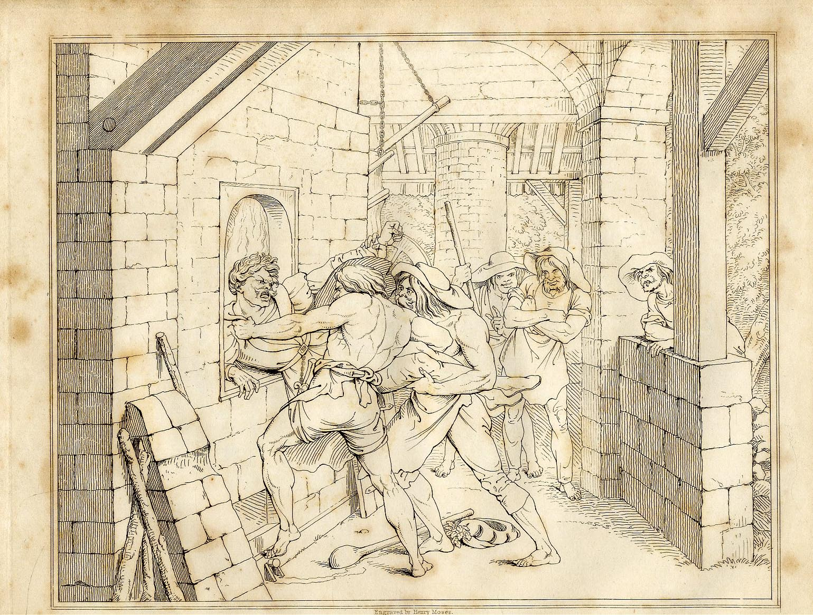

SEPTEMBER 1, Sunday. --After prayers on board, we landed and visited the whaling-town of
Te-awa-iti. Dicky Barrett's house was on a knoll at the far end of it, and overlooked the whole
settlement and anchorage. There were about twenty houses presented to our view; the walls generally constructed
of wattled supple-jack, called kareau, filled in with clay; the roof thatched with reeds; and a large
unsightly chimney at one of the ends, constructed of either the same materials as the walls, or of stones heaped
together by rude masonry. Dicky Barrett's house, or ware as it is called in maori or native
language, was a very superior edifice, built of sawn timber, floored and lined inside, and sheltered in front by
an ample veranda. A long room was half full of natives and whalers. His wife E Rangi, a fine stately
woman, gave us a dignified welcome; and his pretty half-caste children laughed and commented on our appearance,
to some of their mother's relations, in their own language. He had three girls of his own, and had adopted a son
of an old trader and friend of his named Jacky Love, who was on his
death-bed, regretted by the natives as one of themselves. He had married a young chieftainess of great rank, and
his son Dan was treated with that universal respect and kindness to which he was entitled by the character of
his father and the rank of his mother.
We found Williams's ware in the centre of the town; and Arthur's perched up on a
pretty terrace on the side of the northern hill which slopes from the valley. A nice clear stream runs through
the middle of the settlement. Some few of the whalers were dressed out in their clean Sunday clothes: but a
large gang were busy at the try-works, boiling out the oil from the blubber of a whale lately caught. It
appears that this is a process in which any delay is injurious. The try-works are large iron boilers,
with furnaces beneath. Into these the blubber is put, being cut into lumps of about two feet square, and the oil
is boiled out. The residue is called the scrag, and serves to feed the fire. The oil is then run into
coolers, and finally into casks ready for shipping. The men were unshaven and uncombed, and their clothes
covered with dirt and oil. Most of them were strong, muscular men; and they reminded me, as they stoked the
furnaces, and stirred the boiling oil, of Retzsch's grim imagination of the forge in the forest, in his outline
illustrations of Schiller's ballad of Fridolin. On asking one whether they always worked on Sundays, he answered
contemptuously, "Oh! Sunday never comes into this bay!" An Australian aboriginal native was one of this greasy
gang, and was spoken of as a good hand. The whole ground and beach about here was saturated with oil, and the
stench of the carcasses and scraps of whale-flesh lying about in the bay was intolerable.
It's worth a look at the picture Jerningham references here because it conjures a pretty strong impression of the kind of men these are, and the life they were living.

Another man, heading a whaling-party here, was nicknamed "Geordie Bolts." His real name was
Joseph Toms; but being crippled in an encounter with a whale, he had the fame of never having been able to face
one since; and hence the nom de guerre. His appearance was by no means so attractive as that of Barrett.
Independently of the deformity arising from his unfortunate accident, he was of small stature and repulsive
features. Nor had he acquired the same character for hospitality and kindness to either natives or
fellow-countrymen, which we found universally accorded to Dicky. He was married to a near relation of
Rauperaha, and by means of this alliance maintained another whaling station at a harbour called
Porirua, on the main between the islands of Kapiti and Mana.
In a bay separated by a low tongue of land from the main valley of Te-awa-iti, we
found another whaler named Jimmy Jackson, who had a snug little cove to himself. He was positively equal in
dimensions to Williams and Barrett both together. He gave us a hearty welcome; and never ceased talking from the
moment we entered his house until we returned on board. We found him quite an original character, who had
something to say on every subject. He was a great admirer of Bonaparte, whose battles adorned his walls in gaudy
colours and tinselled frames, as bought from some French whale-ship. He supported his superficial view of almost
everything that could be mentioned, by quotations from the Scriptures and Guthrie's Geography, which seemed his
favourite books of reference. He had been, we found, ten years here, being one of the first settlers. He
declared the Pelorus river to be an excellent place for a settlement; and offered to introduce my uncle to an
old friend of his in Cloudy Bay, Jack Guard, who knew the native owners of that district, and who piloted the Pelorus in her trips about the Strait. We had
read an account in the papers, just before we left England, of the discovery by this vessel of a large river and
fine district opening into Cloudy Bay; and we were anxious to examine it for ourselves. It turned out that this
was the Ohiere river, which flows into Admiralty and not Cloudy Bay, and was christened after the brig by
the officers.
During the next four days we had ample opportunities of observing every thing remarkable at
Te-awa-iti and its neighbourhood, and of learning many particulars of its first foundation and subsequent
history.
History Of Te-Awa-Iti.
The above-named John Guard was the first who entered the south-eastern mouth of the channel,
two miles east of our present anchorage, in a small sealing vessel. This was in 1827. Having been driven in by a
gale of wind, he built a house, and carried on sealing and whaling, with great risk and annoyance from the
natives, and no great profit for a long while The natives, in a constant state of war (for this was just at the
epoch of Rauperaha's invasion), were so ill-provided with potatoes or indeed any kind of provisions, that
our adventurers subsisted for some time on whale's flesh and wild turnip-tops; and often, for want of work-men
and tools, they could not save the oil, having no casks, and kept only the bone, which they sold on the rare
occasions when they could find a market on board vessels from Sydney. The Ngahitau tribe, in their
predatory incursions, frequently destroyed their houses and all their property, along with that of the natives.
One old hand, now in Te-awa-iti, had had his house burnt down no fewer than four times.
Since 1831, however, when whaling-ships began to resort to Cloudy Bay, Sydney merchants
worked the stations there and at other places on the coast by means of agents. They paid nominally
10l. per ton for the oil, and 60l. per ton for the bone, finding casks and freight themselves. The
wages of the whalers, however, were paid in slops, spirits, and tobacco, at an exorbitant profit. A pound of
tobacco, worth 1s. 3d. in Sydney, was valued at 5s. and sometimes 7s. 6d. here, and other things
in the same proportion. The men, a mixture of runaway sailors and escaped convicts, sign an agreement at the
beginning of the season, in which these prices are stated, so that they cannot go elsewhere to work, and must
submit to these terms. The season lasts from the first of May to the beginning of October. In these five months,
a whaler can earn 35l. if the season be good; but all depends on the success of the fishery; as, if there
were no whales caught, there would be no pay, and the only wages consist in a share of the produce.
The consequence is a great number of bad debts in a bad season, and these fall on the agent
or head of the party. If he does not advance the men what goods they want, they refuse to work; and sometimes
have no means of paying their account at the end of the season.
The artisans seemed to be the best off. Carpenters and blacksmiths get 10s. a day, and insist
upon payment in money. Williams had amassed a good deal in this way, and having laid it out in purchasing goods
of all sorts from whale-ships, he drove a good trade on shore, knowing whom to trust.
We were told that the different whaling parties on both shores of Cook's Strait, near Banks's
Peninsula, and still further south, were reckoned to procure 1200 tons of oil annually, and that about 500 White
men were employed in the pursuit.
The more industrious of these, during the summer, procure supplies of pigs and potatoes from
the natives, and make large profits by disposing of them again to the whale-ships which look in at the different
harbours previous to going out on the whaling-grounds, or returning home full. The less active spend the summer
at the villages of their native women, either cultivating a patch of ground which the natives have tacitly
allowed them to take possession of, or depending entirely on their native connexions for fish and potatoes, and
drinking out the extent of their credit with the agent in the strongest and most poisonous liquors.
Summer Life--Jealousies.
Much rivalry is of course engendered by the nature of the whaler's occupation; and we
observed that the jealousy of the native tribes, fostered by the women who cohabited with the white men, often
produced the most rancorous feelings between rival parties. Those living in Cloudy Bay with the Kawia,
and those living in the Sound with the Ngatiawa, were in the constant habit of disparaging each other and
each other's natives; and seemed to have imbibed a good deal of the savage enmity existing between the two
tribes. In each place separate bays were the abodes of varying interests, and even on the same beach individuals
seemed disunited and in constant feud with each other, though we should have imagined that they ought to have
been united by their common danger, or at any rate by their love of gain. Fierce quarrels and wild orgies were
to be met with both day and night; and never, perhaps, was there a community composed of such dangerous
materials and so devoid of regular law.
The law of the strong in mind and body was, however, in force. Some few men of iron will and
large limb ruled to a considerable degree the lawless assemblage, and maintained a powerful influence by their known courage and prowess, whether in the
whale-boat or the fight on shore. Some few, too, though very few, like Dicky Barrett, were respected for their
kind-heartedness to all; and these, of better mould than the great body, expressed anxiety for the
accomplishment of our objects.
The redeeming quality of hospitality we found unbounded among them; a stranger was always
welcome to a share of the meal, a drop of the grog, and a seat on a stool, made of a whale's vertebra, in the
ample chimney-corner.
There were about twenty-five half-caste children at Te-awa-iti. They were all
strikingly comely, and many of them quite fair, with light hair and rosy cheeks; active and hardy as the goats
with which the settlement also swarmed. The women of the whalers were remarkable for their cleanliness and the
order which they preserved in their companion's house. They were most of them dressed in loose gowns of printed
calico, and their hair, generally very fine, was always clean and well-combed. It was evident that the whaler's
seamanlike habit of cleanliness had not been abandoned; and that they had effected that change at least in their
women, who seemed proud of belonging to a White man, and had often, we were informed, protected their men from
aggression or robbery.
One day I walked over the hill to another valley, which faces the entrance of the harbour. It
divides into two bays or coves, separated from each other by a tongue of land. In each is a native pa;
these are named Wekanui and Hokikare. At the former we saw two whale-boats, which they told us
were manned entirely by natives. They manage to harpoon a whale sometimes; but as they never succeed in killing
it, they generally receive 20l. in payment from the party which profits by their exertions. The
natives in these two pas amounted to about two hundred, and received us very civilly, being well
accustomed to trade with the whaling-town. We again observed the wretched appearance of the houses and food of
the natives. Much of the latter consisted of dried whale's flesh, of which we saw large quantities hung on racks
about the village. They were somewhat better clothed than the natives at Ship Cove, having, probably, greater
opportunities of trading with the whaling station. The village of Hokikare is prettily situated in a
grassy valley, about half a mile wide and nearly a mile in depth. It faces the entrance of the Sound, which is
about a mile to the east.
Boat Expedition.
September 6th. --Mr. Guard having arrived from Cloudy Bay in a strong sailing-boat, I
determined to accompany my uncle, and we started for the Ohiere or Pelorus river. Besides Guard and
ourselves, we were accompanied by a gentleman named Wynen, who had lately arrived from Sydney, commissioned by
an association of persons there to purchase land in the best situations. He had with him his native wife, named
Rangiawa. Her brother Hengia, or Charley, a young chieftain of influence in the Kawia
"Kāwhia" refers to the original home of Ngāti Toa in Waikato, prior to their migration south.
tribe, accompanied us as one of the owners of the district, and in order to obtain respect from the few members
of the conquered tribe who had been allowed to remain, as tributaries, on the spot. Our crew consisted of four
natives, also of the Kawia tribe, and one White man. We had provided ourselves with provisions for a few
days, and a few blankets.
Retracing our voyage through the Tory Channel and Queen Charlotte's Sound, a distance of
about thirty miles, we looked anxiously into Ship Cove as we passed, having some hopes that a small vessel with surveyors, which was to follow us from
England immediately, might have made a quick passage and arrived. The inlet lay, however, in majestic silence,
not a curl of smoke betraying even the presence of natives. The solemnity of the tapu seemed to be again
imposed on its woods and waters.
As we passed between Point Jackson and the innermost of a reef of low rocks which stretches
out nearly a mile into the Strait, we experienced the buffeting of a strong tide-rip or race. These are very
frequent in many parts of the Strait; and arise from the force of the tide, which, generally speaking, flows
five hours from north to south, and ebbs seven hours in the opposite direction. The numerous friths and bays,
however, cause various eddies and cross currents; which can only be known by experience. Our guide, as I have
before said, was a perfect pilot for the Strait, having coasted about the various beaches and inlets for more
than twelve years.
Jack Guard.
His life in New Zealand has been an eventful one. In the year 1834, on his return from a trip
to Sydney in the ship Harriet, he was wrecked in Ohao bay, near Cape Egmont. The natives of that part of
the coast assembled in large numbers to plunder the wreck; and a fight ensued between them and the crew, which
ended in the defeat of the White party. Some of them were killed; and the rest, including Guard's wife and two
young children, were taken prisoners. Guard, with some few of the party, was assisted in escaping in a boat from
Moturoa, or the Sugar-loaf Islands, by some of the natives concerned. He thus reached Te-awa-iti,
whence he found his way to Sydney. He then laid the circumstances before the Council of New South Wales, and the
consequence was that an expedition was dispatched by Sir Richard Bourke to recover the captives. It consisted of the
Alligator frigate of twenty-six guns, commanded by Captain Lambert; and the Isabella schooner as a tender, with
a company of the 50th regiment of foot. The captive sailors were first given up, though it appears under the
promise of utu being paid, made by Guard and confirmed by two interpreters who infringed Captain
Lambert's especial orders, to make an unconditional demand for the restitution of all the prisoners. As,
however, they were left four days on shore alone among the natives, they were forced to save their lives, which
were threatened, by promising ransom, and that the ships would trade for whalebone. At Te Namu, a native
pa between Cape Egmont and Waimate, Mrs. Guard was recovered, with her infant child. She had been
forced to live with a native chief, and had been often ill-treated, and even wounded, by the natives. In the
conflict in which she was taken she had received some wounds on the head; and after this the head of her
brother, who had been killed and his body eaten, was constantly exhibited to her, after offering her part of the
flesh. These circumstances had very naturally exasperated Guard, and many of the ship's crew sympathized with
him. When the chief in question came down to the beach at Te Namu, he was recognized by Guard, and
ordered to be seized and taken on board by the officer in command of a party on shore. Guard was in command of
the whale-boat which alone could get through the violent surf. The chief jumped overboard, and was then fired at
and wounded. On his recapture, they treated him with great cruelty; wounding him so severely that his life was
despaired of when he arrived on board the Alligator. He was recovered, however, by the care of the surgeon; and
being of great rank, was joyfully exchanged by his tribe for Mrs. Guard and her
child. Negotiations were now entered into for the recovery of the little boy. The natives insisted upon having
utu; and at one of the villages, a lieutenant was waiting with a boat just outside the surf for the boy,
whom they had promised to bring to him, when a musket-ball was fired by a native from the cliff close over his
head. He returned on board and reported the circumstance, when the guns of the frigate were brought to bear on
the pa, and several canoes and some of the houses were destroyed. At a subsequent period a large body of
men were landed at Waimate pa, and drawn up in a commanding position on the cliff, while the officers,
with a party of sailors on the beach below, treated for the surrender of the boy. He was at length brought on
the shoulders of a native; who was in the act of running away with him again, on payment being refused, when one
of the sailors cut him out of the mat which bound him to the native's back; --another shot the native; --the
soldiers hearing the shot, fired at once; and Guard picked up his boy and swam off with him to one of the boats.
The soldiers and sailors drove the natives into the interior, after some little resistance, killing and wounding
twenty or thirty of them. At the end of three days, during which the surf had been too heavy to allow them to
re-embark, they burned the pas and returned on board.
Mr. Busby, the British Resident at the Bay of Islands, and Mr. Williams and the other
Missionaries and residents there, afterwards expressed their opinion to Captain Lambert, "that the example set
these people would be most beneficial;" and that it was the "happiest circumstance that could have occurred for
establishing them in safety upon the island." And one of the principal chiefs at Entry Island told him "that they were of the worst tribe of
persons in the whole of New Zealand; renegades and people that had escaped from various tribes for thefts and
every crime that could possibly be thought of."
A less sensational account of the Harriet affair can be found here.
Those quotes come from testimony at a Committee of the House of Commons in Britain, which condemned the rescue party for using excessive force.
Port Gore--Wild Cattle.
Striking across the wide entrance of Port Gore, we passed close under Point Lambert, and
obtained a view of the Admiralty Islands stretching out to the westward. Following the narrow strait between the
nearest of them, Motu Ngarara, or "Isle of Lizards," and the main, we entered a sheltered bay called
Ikokoia, which stretches half a mile to the south-east, and prepared to encamp for the night on one of
its beaches. The natives, directed by Rangiawa, or "Squeaker," as she was nicknamed among the whalers,
cooked our dinner for us; and we rolled ourselves in our blankets under an overhanging bank of gravel, which
protected us from the heavy dew of a clear starlight night.
7th September. --We were astir at early daylight, and the boat was stowed with the diligence
of an old sealer. Passing the mouths of two bays (one called Titirangi, and the other, which appeared to
extend seven or eight miles into the interior, Anakoa), we reached a boat-channel between the main and
the largest of the Admiralty group, called Kakaho by the natives, and christened Guard's Island, after
their pilot, by the officers of the Pelorus. This passage is narrow and very shallow. We had some trouble in
getting through against a strong tide. Inclining a little to the north-west, we now perceived the entrance to
the estuary of the Pelorus river. Half-way up the hill which forms the south head, we saw five head of wild
cattle, the descendants of some given to the Kapiti natives a few years before by a Sydney
merchant, in payment for a cargo of flax. The estuary is about a mile wide at the entrance, but immediately
expands. For forty miles we continued to advance along this magnificent arm of the sea, which only differed from
Queen Charlotte's Sound in the grander scale on which are the mountains, the woods, and the spacious bays and
harbours branching out in every direction. So numerous and varied in their forms are these ramifications, that
it would be easy to mistake the track to the fresh-water river. The whole scene forms a labyrinth on an immense
scale, in which you may lose your way among tortuous paths of water two or three miles broad, and between hedges
composed of mountains from 2000 to 3000 feet in height, clothed to the summits with the most luxuriant and
majestic timber. Even our pilot guided himself in some of the most intricate passes by watching the set of the
tide. Having reached at sunset to within a mile of the spot where the Pelorus anchored, we again encamped on a
shingly beach in a bay on the east side of the Sound. At this spot there were some ten or fifteen acres of level
ground, on which we were shown the remains of a large pa, once the head-quarters of the tribe conquered
and almost exterminated by Rauperaha. Our friend Charley borrowed one of the fowling-pieces to shoot a
pigeon which was perched close to us. He would not fire until he had got the end of the gun six yards from it,
and consequently blew it to pieces. He seemed proud, however, of his dexterity in having crept so close without
disturbing the bird. The wood-pigeons of this country are as stupid as the tree-partridges of North America,
and, especially in these unfrequented parts, are not easily disturbed. We therefore indulged in some good-natured raillery at Charley's expense. These birds are very large, of brilliant
plumage, and extremely well flavoured. We had laid our blankets on the shingly beach, which makes an excellent
mattress; and were rather alarmed in the night by the tide, which, on rising, extinguished the fire at our feet.
Ducks--Tree-Ferns.
September 8th. --Soon after starting this morning, we passed the mouths of two deep bays,
which stretch far to the east and south-east. The natives told us that at the head of these are necks of land
over which the natives haul their canoes into the head of Queen Charlotte's Sound and the Wairau river
respectively. This latter empties itself into Cloudy Bay, south of Port Underwood. We had now reached the fresh
water, and were steering between extensive mud-flats, from among which we disturbed countless flocks of wild
ducks of different sorts. These are principally the black, the grey, the blue-winged, and the paradise duck, or
pu tangi tangi, as it is called by the natives
The "black" duck here is probably scaup, and "blue-winged" might refer to the New Zealand shoveler, which has blue patches on its wings.
. The last is nearly as large as a goose, and of beautiful
plumage. The drake is of mottled black and dark blue and green; the female has a white head and neck,
greenish-grey body, and light-chocolate wings. As they fly in pairs, the harsh croak of the drake alternates
with a plaintive cry uttered by the duck. Our travelling larder was well replenished as we went along. The
shooting a bird while flying seemed to excite unbounded admiration on the part of Charley.
We were soon ascending against the current of a rapid and narrow stream, forming numerous
islands covered with an abundance of shrubs and scattered trees; the hills close in upon the valley in places.
The pitau, or tree-ferns, growing like a palm-tree, form a distinguishing ornament of the New Zealand
forest. In these natural shrubberies, too, and especially in wet situations, a kind of cabbage-tree, called ti by the natives, nourishes in great
abundance. Its branches are covered with distinct bunches of long fibrous leaves, which grow in an erect
position. The kohai, too, a species of mimosa, covered with bright yellow blossoms, abounds in such
situations, where the stunted growth is an almost unvarying sign of constant inundation. Among the rank grass
and weeds which feathered both banks, some small teal constantly escaped our guns; but the pigeons, which sat
still on the high branches over our heads until we dropped them almost into our boat, more than repaid the loss.
We remarked, occasionally, vestiges of floods which seem to have risen ten feet in this confined valley. As we
proceeded, the boat had frequently to be tracked over shallows and rapids, the natives leaping readily into the
water for this purpose. Just before we reached our destination for the night, we fell in with a party of the
Rangitane, or tributary natives. These came to our assistance at the last severe rapid, and obeyed, in
apparent fear and trembling, every direction of Charley and the other members of the victorious tribe. They had
ascended hither from Anakoa Bay, in order to collect flax and work it into mats as part of their tribute
to Rauperaha; and had formed a temporary encampment on a shingly island covered with high flax of the
finest kind, nearly opposite to which we took up our position for the night. On the boughs of a small grove of
trees, beneath which we lit our fire and disposed our beds and provisions, the pigeons settled in great numbers
towards sunset. We had only to fire as quickly as the fowling-pieces were loaded by the natives, hardly stirring
from one position, the death of one bird not disturbing the equanimity of his companion on the same branch.
PIGEONS--PRECAUTIONS.
Many of the forest trees bear berries, which furnish food to the pigeons. Their favourite
morsel is the fruit of the tawa, a tree which abounds everywhere. The fruit is not unlike a damson in
colour, shape, and size; but, if picked fresh, it tastes strongly of unadulterated turpentine. After these
berries have fallen some time, they become perfectly insipid, but are juicy and refreshing if they have been
lying under the shade.
When we lay down for the night, our attendant natives begged us to examine our fire-arms and
hatchets, and to keep them close to our hands, ready for use. On inquiry into the reason for this precaution,
they told us that Pakihure, the great chief of the Rangitane, had managed to escape into the hills
with some few of his followers from the general slaughter by Rauperaha, and that the report of our guns
might attract him, and lead to an attack on our party, for the sake of vengeance and plunder. As Jacky Guard
himself did not neglect the injunction, we also complied; but we were not disturbed from a sound sleep until
early daylight, when I was awoke by some heavy drops of dew falling on my face from the overhanging branches,
where they had collected during the night. The birds, too, had begun their cheerful hymn.
I can't find any reference to this "Pakihure" except for a melodramatic and ahistorical reference in the 1888 "Raromi: Or The Maori Chief's Heir"
where he plays something of a villain. It's possible Jerningham misheard "Ngāti Parakiore", a hapū of the Rangitāne.
My uncle and I took our usual morning plunge, and experienced the sharp cold of the stream,
which takes its source among snowy mountains. The natives and Guard stood in great astonishment on the bank, and
had a hearty laugh as we rushed out, shivering and nearly blue. As the boat could proceed no further on account
of the shallowness of the river, we obtained a canoe and experienced guides from among the slave tribe, and
pushed slowly up the stream, wishing to ascertain whether the valley, now narrowed to little more than a mile, expanded into the interior, as we had been led to expect from the account of the
officers of the Pelorus and the unbounded praises of Jacky Guard. The canoe was hollowed out of a single tree,
and propelled by alternate paddling, poling, and tracking, as the different parts of the river required. Our
guides seemed much astonished at everything new about us and our equipments. At a halt which we made about
mid-day for a meal, some of them wished to taste the brandy which we put into the water. The scene that ensued
baffles description. They made frightful grimaces, held their throats with both hands, and rushed down to the
river with a yell, to plunge their gaping mouths and watering eyes into the clear stream. I am convinced that
they had never before tasted ardent liquors, and that they would not readily acquire the taste for them. The
river was no longer navigable even for our small canoe, after getting, with great trouble, eight miles from last
night's camp. The valley continued to get narrower instead of expanding; and the hills, which occasionally broke
off precipitously at the bank of the stream, also changed their character, being clothed with fern instead of
wood. The valley itself had lost a good deal of its woody character; and when we had got two miles further, by
walking along the bank and through the flax-grounds when practicable, and being carried across the fords on the
natives' shoulders, we found ourselves in a narrow fern valley, now and then relieved by patches of flax-growing
swamp, and small coppices of low wood. We reached some miles further than the officers of the Pelorus had
penetrated with Guard, and then retraced our steps, after setting fire in pure mischief to the fern. The blaze
spread far and wide, and its glare was perceptible all night from our camp. On the way up we had passed the
remains of another large pa, built on a spot apparently safe from inundation. Old painted posts and carved
monuments rose mournfully from among the tangled grass and briars, claiming respect for a certain venerable
appearance of antiquity. The pretty situation under the hill-side, the rich vegetation of the spot under a
glowing sun, and the solitary and decaying relics, told the whole history of Rauperaha's devastating
raid, which was not belied by the dejected air with which our guides pointed out the resting-place of their
fathers.
The Flax Plant.
Moving down a little further to-night, we made a tent of the boat's sail close to the
flax-collecting encampment. We here saw this magnificent plant in perfection. Each plant consisted of some forty
or fifty leaves resembling those of our flag, from two to four inches in breadth, and reaching to the length of
eight or nine feet. The leaves diverge from the root, and two or three flower-stems also shoot from the ground.
These, however, had only begun to sprout. The leaves are all folded in two longitudinally, thus giving an inner
and outer side to the leaf; but when it has attained its full growth, it sometimes opens out, although never so
as to lie perfectly flat. The inner side has a natural gloss, while the outer side is dull. The natives seemed
to prefer the innermost leaves, cutting them at about a foot from the ground with a sharp mussel-shell, of which
they had brought a large stock from the sea-side. When a quantity of leaves had been collected, they proceeded
to a division of employments. Some split the leaf longitudinally along the fold above mentioned, and a second
gang cut the dull or outer side of each half-leaf nearly through transversely about mid-way along its length.
For this operation, which is rather delicate and requires experience, a small cockle-shell was used. The art
appeared to be to cut through all but the fibres, which border closely on the glossy portion. The
half-leaves, thus prepared, were handed to a third workman. He, taking a bundle of them in his left hand at the
transverse cut, and spreading them out like a fan, with the glossy side upwards, took a mussel-shell between the
finger and thumb of his right hand to perform the next operation. This consists in giving each half-leaf a
longitudinal scrape from the transverse cut in the middle to each end. He held the leaves extended by seizing
the ends of each in succession with his big toe. Flax-scraping is always performed in a sitting posture, and one
foot works quite as hard as either of the hands. The dexterity and quickness with which this whole operation was
performed drew from us repeated exclamations of delight, of which the performers seemed not a little proud. The
result of the scrape is to make about five-sixths of the leaf, beginning from the dull side, drop off on to the
ground in two pieces. The fibres which compose the glossy surface remain in the hand of the operator, of the
full length of the leaf, and he puts them aside, and proceeds with another bunch. The splitters and
transverse-cutters worked faster than the scrapers, and when they had operated on all that was gathered, they
also took up their mussel-shell and scraped in their turn. The short pieces which I have described as dropping
on to the ground were treated as refuse, and allowed to dry or rot; the full-length fibre of the glossy side
alone being preserved to undergo further processes previous to manufacture into mats. The only use that I have
ever seen made of the short refuse is for the outer portion of a rough mat, much resembling the thatch of a
house. These leaves being woven in close rows, hanging downwards one over the other, into the interior texture
of the mat, are perfectly impenetrable to rain. I have often braved with impunity the heaviest rain, sleeping under no other
shelter.
The plant is called phormium tenax by naturalists. The general native name for the
plant, we were told, was korari; but each sort, and there are ten or twelve, has its distinctive name.
Any portion of the leaf, when gathered, becomes here kie kie, or literally "tying stuff." The
operation of scraping is called haro; the fibre when prepared muka.
These natives seemed to have no property beyond the mere means of existence; and their abject
state as slaves, holding their lives at the mere caprice of the natives by some of whom we were accompanied, was
striking.
We descended the river in company with the four or five canoes, in which they stowed
themselves, with their women and children, cats, dogs, and pet sucking-pigs, who all took their places among the
baskets of flax and potatoes, and seemed as much at home when shooting a ticklish rapid as on shore. One boy of
twelve years old made himself a canoe of two bundles of soft bulrushes, called raupo, which he bound
together with flax, and guided with great dexterity from his perch in the middle.
We halted soon after meeting the salt water, tide and wind being against us, and bivouacked
on another shingly beach.
There is generally a regular land and sea breeze here; but a gale of wind from the Strait
to-day penetrated up the Frith of the Ohiere.
Our friend Jimmy Jackson, who had followed on our track, joined us this evening. He had lost
his way for two days by taking a wrong direction in the labyrinth which I have above mentioned; and would have
passed the mouth of the bay in which we were encamped without seeing us, had we not brought him to by a shot. He was anxious to know whether we
approved of the location; and seemed to be afraid lest Wynen and Guard should have ascertained our opinion, and
determined to conceal it from him. He varied his inquiries, however, with descriptions of his own excursion;
telling some wonderful tales of the number of pigeons he had shot, and of one of them flying away with his
ramrod which he had left in the gun in his hurry to fire quick enough. He pushed on homewards the same evening,
having a White crew. Our native crew declined to pull a heavy boat against the wind. Guard told us the
maori "boys" were good for a spirt, but not for hard or continued fatiguing labour.
The next afternoon we encamped early on Guard's Island, the wind being again contrary.
Landing on a sheltered beach on the west side, we found Enai, the elder brother of Charley, who had come
thus far to meet us in order to hear what we thought of the Ohiere. He is a tangata tapu, or
"sacred personage," and is consequently not adorned with tatu. He was endowed with the power of cursing,
blessing, and, to a certain degree, prophesying. He was also supposed to have the art of overcoming diseases and
bad weather, or obtaining a fair wind, by his incantations. He was not a little arrogant of his rank and
sanctity, and accosted us in a sort of slang off-hand manner, acquired among the whalers of Cloudy Bay.
Sacred Chiefs
An old chief named Pukiroa, uncle to Charley and Enai, lived at this
settlement, and was also considered very sacred. The spot we had selected turned out to be tapu, on
account of some of his hair being buried in a small painted mausoleum close by; and he made a great fuss about
our dinner having been cooked there. Being under the protection of the family, however, we were not made to pay for the infringement; and the only result was the careful abstinence of
the whole party from eating anything cooked at our fire, from eating or drinking out of our utensils, or even
lighting their pipes at our fire, or at any fire that could be traced to it. The old chief was very ugly,
blear-eyed, surly, and half-witted; so that he well suited his character of magician. Enai, or "Gun-eye,"
as the whalers had christened him, was privileged by his own tapu to indulgence from that of his uncle;
and was not modest in asking for wine or brandy. To balance in some measure these bad qualities, he was a good
carpenter, and worked industriously at some part of his canoe all day long. He much coveted a large clasp-knife
of mine which contained two saws, and asked for it with his usual impudence.
A gale from S. E. blew all to-day, and brought up some heavy rain to-night. We had foolishly
neglected the well-known sealer's habit in rough weather of turning his boat over for a shelter, and had
contented ourselves with getting inside, having spread the sails over the top as an awning. The sails leaked, so
that we had to bale our beds out in the night.
On the 12th, being still detained by the gale, we crossed the highest ridge of the island,
and emerged from the wood into extensive clearings on the N. E. face, among which some serene villages were
prettily situated. Some of the Kawia live here, and appeared to us better housed and clothed, and more
contented and free from alarm than any natives we had yet seen. They possessed an abundance of flax, pigs, and
potatoes.
On the 13th, we sailed with a fair wind; but were met near Point Jackson by a second edition
of the S. E. gale, which forced us to take refuge in Port Gore till the morning of the 16th. We were fortunate in finding a deserted hut free from fleas, and
waited very contentedly for a change. Enai, who had accompanied us in his canoe, supplied our mess with
fish and birds; and we chattered bad maori with the natives, and of old times with Jacky Guard. Port Gore
forms a fine harbour of refuge for vessels caught by adverse gales in the Strait. Its capabilities in this
respect have been appreciated by the natives, who call it Omahanga, or "Place of Flight." On the
morning of the 16th, we left this place at seven o'clock, and arrived alongside the Tory at three in the
afternoon.
We found that we had missed a noble sight during our expedition. A whale had been chased into
the harbour by some of the boats, and killed close to the ship.
We could not fail to perceive, on our return, that the population of Te-awa-iti were
watching our movements, apparently intent upon purchasing land for themselves in the neighbourhood of whatever
location Colonel Wakefield might select for the expected colony. Information also arrived that a missionary
schooner had visited Port Nicholson, with a message to the natives not to sell their land, and that Mr. Williams
(the chairman of the Church Mission) would soon arrive from the Bay of Islands.
This conflict with missionaries will continue throughout this narrative. Perhaps surprisingly, attitudes of missionaries towards the project of colonisation were often ambivalent as best. In this they were informed by a growing unease with the outcomes of Britain's earlier colonies, and a desire to separate the conversion of Māori from the percieved evils of colonisation.
The "Mr. Williams" here is William Williams, who would become a staunch advocate of the Treaty of Waitangi, and continue to oppose expropriation of Māori land by colonists.
My uncle, therefore, who had intended to proceed to Cloudy Bay, where Guard and Wynen engaged
to prepare the natives for disposing of the Ohiere to us, determined to go to Port Nicholson as soon as
the wind should be fair.
Illness Of Natives.
We had proved during our excursion that all the statements we had heard as to the salubrity
of the climate were true. Ten nights' bivouacking in the open air, although exposed to heavy dew, and in the end
of winter, had no bad effect on any of our party; and, with the exception of the period during
which the gale of wind lasted, all the days were genial and exhilarating, and some much warmer than English
summer weather. On the 18th, a calm still detained us at Te-awa-iti. The youngest and favourite wife of
Tipi, the principal chief at that place, fell ill to-day. According to the universal native custom on
such occasions, she was removed from his house to an open shed near it, and became tapu, so that she
might eat no food. Tipi and his friends, who hourly expected her death, sat wailing and weeping around
her, now and then discharging their muskets. Mr. Robinson, the surgeon of the ship, restored her for a time by
breaking through the tapu, giving her a little wine, and moving her back to the warm hut. The natives
were urgent for a dose of Epsom salts, which they have been taught by the whalers to consider a sovereign remedy
for all complaints. While talking with some of the white inhabitants as to the general health of the natives, we
learned that they fret so much when once affected, that they very much aggravate the disease. Some of the
whalers said, "When a maori tells you he's a-going to die, by------ he will, and no mistake about
it. They takes the fit, and off they goes in the sulks." My subsequent experience has fully confirmed the fact
so roughly mentioned by the sailor. When once attacked by a very rapid consumption, which they alone are subject
to, they say the Atua or "Spirit" has seized them, and they will take no encouragement. Much of this may
be owing to their knowledge that they must be exposed to all the vicissitudes of the weather.
19th. --Some dispute arose as to the proprietorship of a whale which the native boat had
harpooned. A rival agent had instigated the natives to ask more than their usual 20l. from the party who killed the whale. There was no one at hand to
whom the disputants could refer the matter as a competent and disinterested umpire; and a forcible seizure was
contemplated by the party not in possession, on the morning of the 20th, when we left the Sound with fair wind
and tide, having weighed anchor at day-light.
We had got on board Barrett, and his wife and children, with several attendant natives of
both sexes, who formed a sort of colony in our ample 'tween-decks. Dicky had long been too fat and heavy to go
out himself in the whale-boats, and left the affairs of the station in the hands of a sort of clerk during his
absence. We also took over a steady trader, named Smith, who knew the natives well, and was to be left in charge
at Port Nicholson, should we succeed in purchasing it. He had been mate of two or three vessels about the South
Seas, and was a little of whaler, sawyer, carpenter, and trader. There were many such nondescript characters at
Te-awa-iti; but it was rare to find among them so trustworthy a man as he whom we had selected.
Shores of Cook's Strait.
To the south of the entrance of Te-awa-iti, the bleak, barren hills which bound the
Tory channel to the east run down into successive points, round one of which lies the harbour of Point
Underwood. Further east we could distinguish the low land at the mouth of the Wairau river, the
remarkable cliff called the White Bluff, which forms the eastern extremity of Cloudy Bay, and the land trending
along down to Cape Campbell, all backed by a rugged mass of hills that seem to augment as they retreat into the
interior, from the tablelands near the coast, till they swell into the volcanic and snow-clad range of
Kaikora. Looking north, the hills above Te-awa-iti terminate in an abrupt bluff, gome 300 feet in
height, called Wellington Head by the Europeans. This is the nearest land to the North Island, here seventeen miles distant;
and it was not until we had got some offing that we saw Cape Koumaru and the Brothers. The latter are two
rocky islets, standing forty feet out of water at the distance of a mile from the main. As our eyes wandered
across the Strait, they were met by Kapiti, Mana, and the adjacent mainland, the high lands about Cape
Tera- witi, which is the nearest point to the Middle Island, and the coast on either side of Port
Nicholson Bay, extending about thirty miles from Terawiti to Cape Palliser. As both coasts recede from
the narrowest part of the Strait, it is about thirty miles from the entrance of Te-awa-iti to that of
Port Nicholson. As we drew under the high land east of Cape Terawiti, the northwest breeze blew fresh
over the hills, and we flew along under all sail past the long reef of pointed rocks which lies off Sinclair
Head. This is the bluff termination of a range of mountains called Rimarapa, and lies about six miles
from Terawiti.